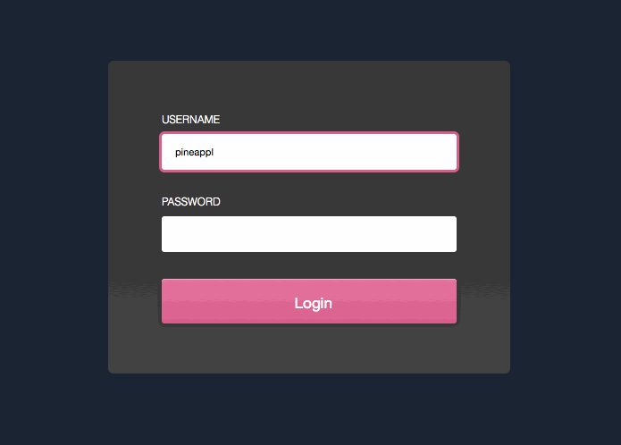

frees users from thinking about states
See the Pen Modal window destroy concept by LegoMushroom (@sol0mka) on CodePen.
The greatest API OF ALL TIME!
...a great API
var moveTopAnimation = new Animation(el,
[
{ transform: 'translateY(100px)' },
{ transform: 'translateY(0)' }
],
{
duration: 300,
easing: 'cubic-bezier(0,0,0.32,1)',
fill: 'forwards'
});
Better times are coming, but until then we have plenty of animating power in CSS and JS
First, last, inverse, play.
.thing {
width: 500px;
translate: transform 100ms ease-out;
}
.thing:hover {
transform: scale(1.2);
}
This is BAD
.thing {
width: 600px;
transform: scale(0.83);
translate: transform 100ms ease-out;
}
.thing:hover {
transform: scale(1);
}
In this example it wouldn't really make a difference
var first = el.getBoundingClientRect();
el.classList.add('totes-at-the-end');
var last = el.getBoundingClientRect();
var invert = first.top - last.top;
el.style.transform = 'translateY(' + invert + 'px)';
requestAnimationFrame(function() {
el.classList.add('animate-on-transforms');
// GO GO GOOOOOO!
el.style.transform = '';
});
el.addEventListener('transitionend', tidyUpAnimations);
Animation is important
Don't be a lazy ginger
Use FLIP principles
Sit on your pile of gold